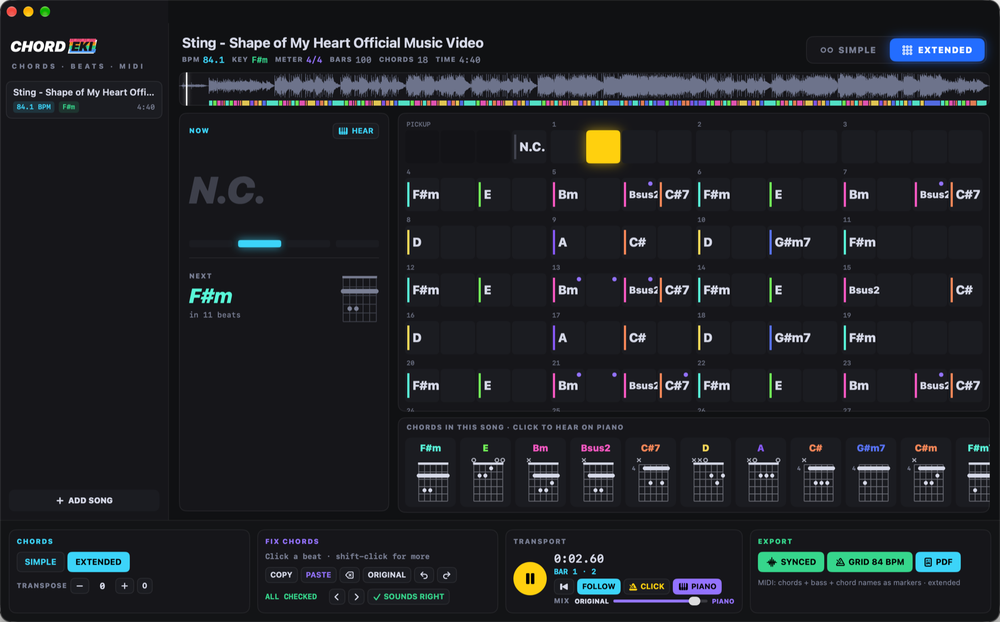
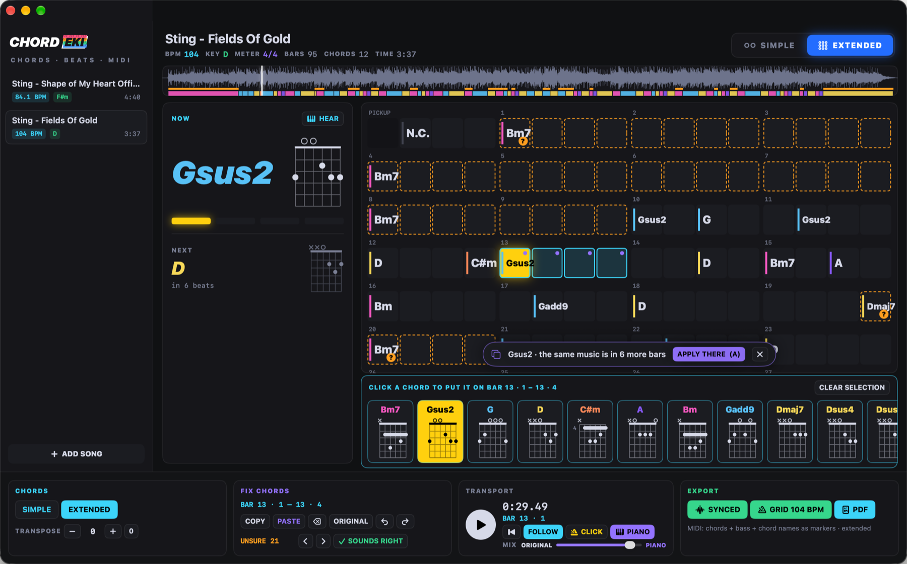
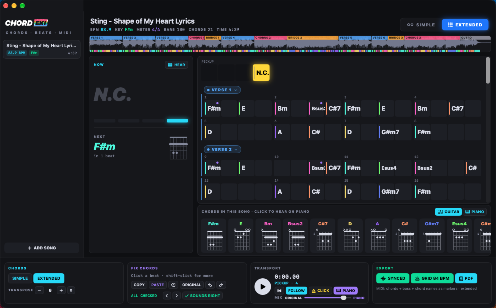
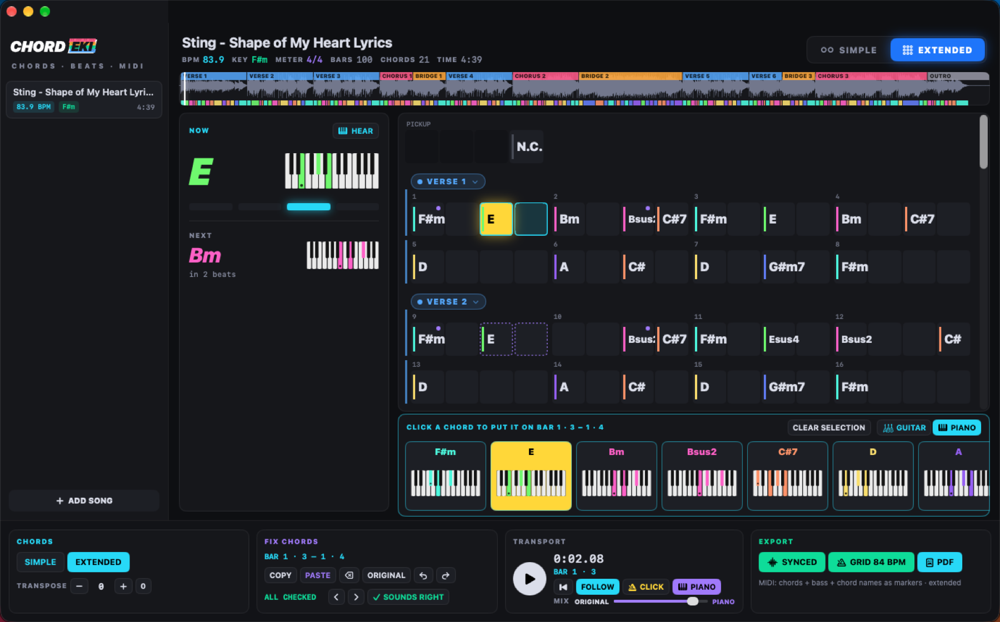
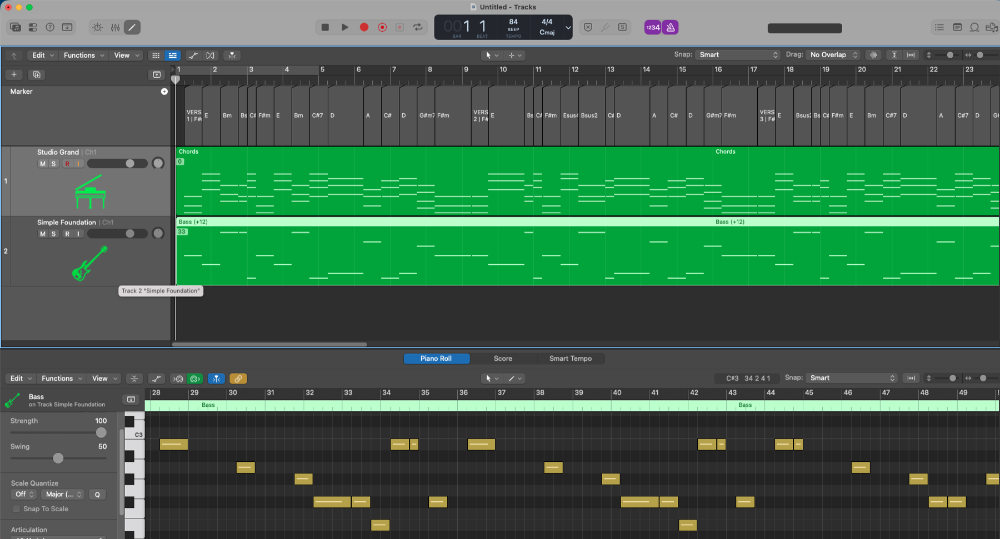
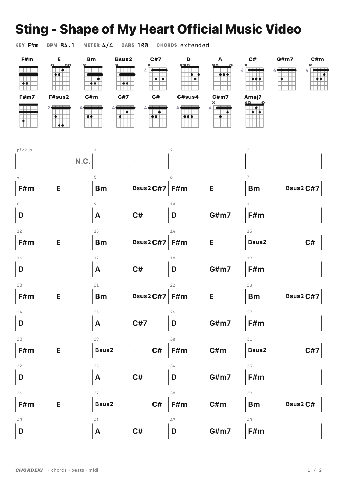
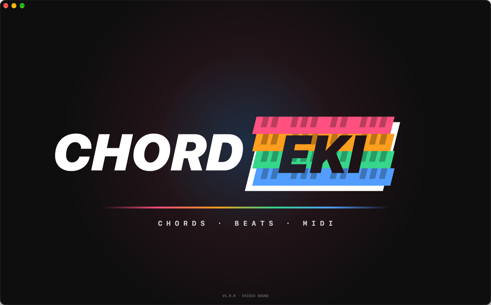

Hear the chords of any song on the beat grid, check them by ear, fix them in seconds. Then take them anywhere: MIDI that lines up with the recording, or a printable chord sheet.

Chord apps guess and leave you alone with the guess. CHORDEKI starts there: it hears the beat and the bars right, shows you where it might be wrong, and lets you check and fix every chord by ear.
A trained beat model (Beat This!) listens to the whole song and finds every beat and the 1 of every bar. The chords change where the music changes: on the bar line or the half bar, not anywhere.
Major and minor, or extended: 7, maj7, m7, sus2, sus4, add9, dim, m7b5, aug. SIMPLE / EXTENDED in one click, transpose, names as letters or as Roman / Nashville numbers (i, bVII, V7 · 1m, b7, 5⁷), a guitar shape or piano keys for every chord, NOW and NEXT while it plays.
Click any chord and hear it on the piano. PIANO plays the chords along with the song; slide MIX between the original and the piano. With PIANO on, ← → step from chord to chord.
Click a beat, shift-click for more, pick the right chord from the song's own chords or any chord. ⌫ removes one (the chord before goes on), ⌘C ⌘V copy a whole passage, ⌘Z undoes.
You don't have to listen through the whole song to find the mistakes.
Where the engine wasn't sure, the chord is marked with ? and an orange frame, and flagged on the waveform. U jumps to the next one and plays it on the piano; O says it sounds right, fix it if it doesn't.
CHORDEKI hears which bars are the same music, even where it named the chords differently. Fix a chord in one verse and it offers the fix for every other verse: A applies it everywhere at once.


Verse, chorus, bridge: the chords make sense when you see where they belong.
CHORDEKI listens for what repeats and where the sound turns, and suggests the structure: INTRO, VERSE, CHORUS, BRIDGE, OUTRO… Every section starts on a new row of the grid, and the waveform shows the whole song in colour.
Click a section's name to rename or remove it, or right-click any beat: Section Starts Here – also PRE-CHORUS, BUILD, DROP, SOLO, BREAK. Mark one chorus and it offers the same music elsewhere: A marks them all. ⌘Z undoes.
Section titles on the PDF chord sheet, and cue markers in the MIDI, so your DAW shows the song's parts too.
Not everyone reads guitar boxes. One switch under the grid – GUITAR / PIANO – shows every chord on piano keys instead: the notes lit in the chord's colour, a dot on the root. NOW, NEXT and the PDF chord sheet follow the switch.

Every export is exactly what you see: SIMPLE or EXTENDED, transposed, with your fixes.
Chords, bass, chord names as markers and the song's sections as cue markers, with a tempo map that follows the recording beat by beat. Drop it under the original in any DAW: it stays together to the last bar.
The same on one steady tempo, a whole BPM. Clean bars for your own production, a drum machine, quantized parts.
Switch it on and the MIDI chords play in the rhythm of the recording's accompaniment – where the guitar strums or the piano plays, on a 16th grid, with its dynamics – instead of one held chord per change. A comping track, ready to play.
A printable chord sheet: title, key, tempo, every chord as a guitar shape or on piano keys, then the bars section by section, in rows of four with bar numbers.
Drag the MIDI file in next to the song: a chord track, a bass track, and every chord name and section as a marker on the timeline ("VERSE 1 | F#m"), on the song's own tempo – here in Logic Pro, from bar 1 to the last.

Ready to print or to put on the music stand.

The EKIDIO SOUND look you know from STEMEKI and PADEKI, starting with a four-chord hello.

| Space | play / pause |
| ← → | a bar back / forward · with PIANO on: chord by chord, played on the piano |
| Enter | to the start |
| P | hear the chord on the piano |
| J K | PIANO along with the song · metronome CLICK |
| U ⇧U O | next · previous unsure chord · it sounds right |
| A | apply the fix to the same music elsewhere |
| ⌫ Esc | remove the chord (the one before goes on) · clear the selection |
| ⌘C ⌘V ⌘Z | copy · paste · undo chords |
| ⌘E ⇧⌘E ⌘P | MIDI synced · MIDI grid · PDF chord sheet |
| ⌘O | open songs (or drop them on the window) |
1. Download the DMG and drag CHORDEKI into Applications. 2. The first time, macOS may block it: click Done, then System Settings → Privacy & Security → Open Anyway. 3. Updates arrive by themselves.
At the first start, one click on INSTALL ENGINE sets up its own analysis engine (about 300 MB download): no Terminal, no Python needed. It opens MP3, WAV, AIFF, M4A, FLAC and WEBM.